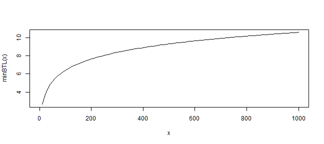

Original Paper
The Effects of Backtest Overfitting on Out-of-Sample Performance
Bailey, David H. and Borwein, Jonathan M. and Lopez de Prado, Marcos and Zhu, Qiji Jim
October 7, 2013
Available at SSRN: http://ssrn.com/abstract=2308659
TimelyPortfolio
The Effects of Backtest Overfitting on Out-of-Sample Performance
Bailey, David H. and Borwein, Jonathan M. and Lopez de Prado, Marcos and Zhu, Qiji Jim
October 7, 2013
Available at SSRN: http://ssrn.com/abstract=2308659
# these are the constants referenced
# Euler–Mascheroni's constant
-digamma(1)
## [1] 0.5772
# euler constant
exp(1)
## [1] 2.718
\[ \begin{aligned} (1-\gamma)Z^{-1}\left[1-\frac{1}{N}\right]+\gamma Z^{-1}\left[1-\frac{1}{N}e^{-1}\right] \end{aligned} \]
### Try to get the right answer for Eq. 4
# if N = 10 paper says 1.57
emax <- function(N) {
( ( 1 + digamma(1) ) * qnorm( 1 - 1/N ) ) +
(-digamma(1) * qnorm( 1 - (1/N) * exp(-1)))
}
emax( N = 10 ) # should be about = 1.57 to match paper
## [1] 1.575
#implement upper bound
upbound <- function(N) {sqrt(2*log(N))}
#make a ugly plot for reasonableness check
curve(upbound, from = 1, to = 1000, col = "red", lty = 2)
curve(emax, from = 1, to = 1000, add=TRUE)
grid()

### Try next example for Eq. 6
# if y = 5
# so solve for annualized Sharpe of 1
# says no more than 45 N should be tried
# first just do this to make sure I understand
N = 45
y = 5
emax( N ) * y^-0.5 #seems like on the right path
## [1] 0.9998
\[ \begin{aligned} \left(\frac{(1-\gamma)Z^{-1}\left[1-\frac{1}{N}\right]+\gamma Z^{-1}\left[1-\frac{1}{N}e^{-1}\right]}{\overline{E[max_N]}}\right)^2 \end{aligned} \]
#use emax from earlier for numerator
minBTL <- function( N, eMaxSharpe = 1 ) {
(emax(N) / eMaxSharpe) ^ 2
}
#then this should equal 5 if correct
minBTL( N = 45, eMaxSharpe = 1 )
## [1] 4.998
#make ugly plot for a reasonableness check
curve( minBTL, from = 1, to = 1000)
